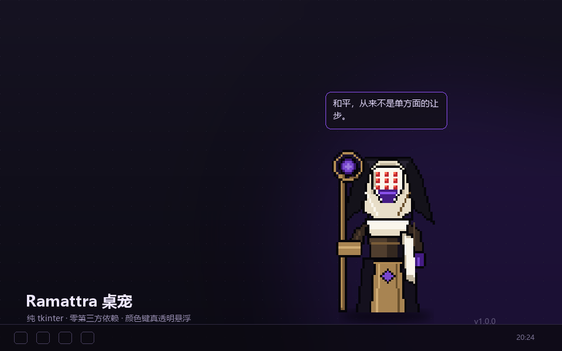
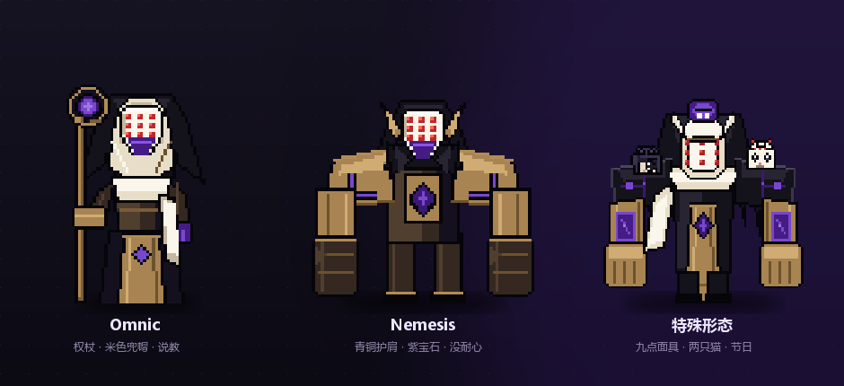

一个真的浮在桌面上的像素宠物：不是网页里的小方块，而是把窗口背景变成透明色的 layered window。单击说话、双击换形态、拖到哪儿就在哪儿待着。

以“脚”为锚点缩放，换形态时不会从原地跳走。特殊形态肩上那两只猫是可以点的。

| 形态 | 造型 | 说话风格 |
|---|---|---|
| Omnic | 白面具九点、米色兜帽长袍、权杖 | 说教、劝你喝水的僧人 |
| Nemesis | 青铜护肩、紫宝石胸甲、巨型铁拳 | “别碰。”“说重点。” |
| 特殊形态 | 九点白面具、金色护臂、肩上两只猫 | “嘘。别吵醒它们。” |
大多数人做“桌宠”只能待在浏览器窗口里。这里换了一个思路：让窗口本身成为那块不规则形状。
# 精灵图全部烘焙在洋红底色上
Tk 窗口背景 = #FF00FE
↓ wm_attributes("-transparentcolor", "#FF00FE")
Windows 把它当作 layered window 的颜色键
↓
这个颜色的像素 = 完全透明 + 鼠标穿透
再配合 overrideredirect(True) 去掉标题栏和任务栏按钮、-topmost 保持置顶，看起来就像桌面上多了个活物。精灵在 1:1 像素网格上手绘，3 倍 NEAREST 放大，边缘永远是硬的。
单击说一句台词并播放动画，双击在三种形态间循环。
特殊形态下点肩上的猫，它们会眨眼并替自己说话。
多显示器也认边界；菜单里能打盹、置顶、切换形态、退出。
整数放大，像素不糊；选择写进配置，下次还记得。
闲置几分钟自己睡，点一下叫醒；平时还会随机自言自语。
只用标准库 tkinter。Pillow 只在重新烘焙精灵时才需要。
需要 Windows + Python 3.10 以上（安装时勾选 Add python.exe to PATH）。没有 pip install，没有虚拟环境。
git clone https://github.com/subarudesu258/ramattra-desktop-pet.git
cd ramattra-desktop-pet
:: 一键安装：复制到 %LOCALAPPDATA%，建桌面 + 开机启动快捷方式
install-to-pc.bat
只想临时跑一下？双击 run.vbs 就行（无控制台闪窗）。
当前已知限制：仅 Windows；只有整数倍缩放；没有音效。这些都开成了 issue，欢迎认领。